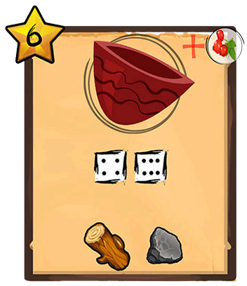
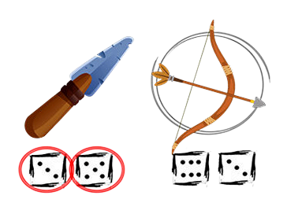
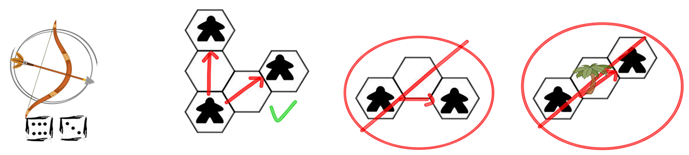

You are on a deserted island far away from civilization. Your task is first and foremost to survive.
Visit game website
1-4 players, age 8+, game time 15-30 min
Game objective:
The object of the game is to complete the scenario objectives, scoring as many points as possible.
Game preparation:
To play we need:
1 player: solo game sheet, pencil or pen, 4 D6 dice, character marker (meeple preferred), scenario card
2-4 players: a character sheet for each player, a common map card for all players, 4 D6 dice, a pen or
pencil for each player, character markers for each player (preferably different colored meeples), scenario
card
Island map (solo game)
Course of play:
In the gameplay, the goal is to complete the scenario and at the same time score as many points as possible.
In multiplayer, we randomly designate the first player, then take the next player's turn clockwise (no more
first player designations).
At the beginning of the game, each player chooses a starting point on which to place their character marker
- it can be any empty field on the map (or chosen by the scenario).
Each turn begins with a roll of 4 D6 dice which constitute the player's action pool.
Using them they can perform various actions:
-
Move:
It costs 1 die point to move each field. This means that for a die value of 5 you
can move 5 fields. You can use any number of dice to move or not move at all. Making a move means moving
the meeple to a new field (we do not draw anything on the map during a move, we can move on the same
fields many times).
Palm fields are an obstacle that you always you have to go around. You can't go through them
nor can't stop there.
You can use any amount of dice per turn to move.
You do not have to use all the movement points you get from the dice. You may stop earlier on the field
on which you want to perform the action (e.g. move 2 fields using dice with a value of 6). However, this
means the player ends their move and loses any remaining points on the die that was used to move.
-
Collect resources:
There are 3 resources needed to create items in the game.
To get an item we have to enter its field and spend one die of any value. Then cross the item off the
map and mark it in your inventory.
We stop at the field of the resource that we want to get.
We pay the cost of any one die and cross out the resource from the map.
We mark the acquisition of a resource in the inventory.
In the same manner we can also collect food and water which we also mark in the appropriate places water
and food resources (and we cross out those collected on the map)
Collecting 1 food resource gives 1 resource point. (In various scenarios, different types of food will
appear, hence the different symbols.)
 Resources and food/water can be captured with any die, but each field of this type is also
marked with a die value.
Resources and food/water can be captured with any die, but each field of this type is also
marked with a die value.
If we use a die with this value we will get a 'survival
point'.
-
Perform tasks:
After entering specific fields we can perform tasks thanks to which we gain points at the end of the
game.
Collecting crystals
Precious crystals can be found on the island. After returning to civilization they can
provide you with wealth, it is worth collecting them.
The crystal is collected in the same way as resources, you enter its field and sacrifice a
die of any value. Then cross the crystal off the map and circle the crystal you've gained in
your own crystal field. We start marking the crystals on the left side of the map - each new
crystal gives more points (all are counted separately at the end of the game)
In a multiplayer game, each player counts their own crystals (i.e. crosses off one by one,
if the other player got 2 it doesn't mean that another will get the straight third one for
10 points)
Smoke signs
In certain places on the island we can make smoke signs with a campfire. This way we
increase our chances of being rescued.
When you enter any of the smoke marks on the map, sacrifice any die and enter its value into
the free smoke mark field (also cross it out on the map). (To be able to perform this
action, you must have the item: campfire!)
Now in order to perform this action elsewhere you will have to use exactly the same dice
value as you used the first time. After performing 4 the player will receive 25 points at
the end of the game.
In a multi-player game 25 points are awarded to the player who has the most smoke marks
provided that at least 4 have been made in total. In the event of a tie, each player who
participated gets 5 points.
Masks
Mysterious masks can be found in many corners of the island.
The mask is collected in the same way as resources - you enter the field with the mask and
sacrifice any of the die.
The mask is plotted on the map on the on the field of collected masks, marking each
successive mask with a circle.
Each mask that we have collected can be used once - it allows us to change the value of any
die to any chosen one. Only after using the mask we remove its points. For
each captured but not used mask we get 5 points at the end of the game. Used masks do not
give any points.
Island map
When you reach certain locations on the island, it is possible to make a map of the
island.
To collect the map you have to enter the field with its marking and then use one of the
required dice (2, 4, 5, 6) . This value is crossed out and for the next section of the map
we will have to use values that are left. After completing the total, the player will
receive 25 points at the end of the game.
In a multiplayer game, 25 points are awarded to the player who has the most map sections
- provided that at least 4 have been completed in total. In case of a tie, each player who
participated gets 5 points.
-
Create items:
At any time during their turn, the player can create items using the collected resources and certain
dice values. This can be spread over any number of turns by adding individual pieces at a time of his
choosing. The dice values indicate the plan to create the item. Most items, apart from the points at the
end of the game they also allow you to perform special actions...
Items
Pickaxe
To create a pickaxe we need dice 1 and 3 and one wood and stone.
The pickaxe you have allows you to collect 2 units of stone each time this resource is mined.
This action is automatic and never exhausts.
At the end of the game it gives 6 points.
Axe
To create a axe we need dice 2 and 4 and one wood and stone.
The axe you have allows you to collect 2 units of wood each time this resource is mined.
This action is automatic and never exhausts.
At the end of the game it gives 6 points.
Knife
To create a knife we need dice 3 and 5 and one wood and stone.
The knife you have allows you to collect 2 units of rope each time this resource is mined.
This action is automatic and never exhausts.
At the end of the game it gives 6 points.

Pot
To create a pot we need dice 4 and 6 and one wood and stone.
The pot you have allows you to collect 2 units of food each time this resource is mined.
This action is automatic and never exhausts.
At the end of the game it gives 6 points.

Flask
To create a flask we need dice 5 and 2 and one wood and rope.
The flask you have allows you to collect 2 units of water each time this resource is mined.
This action is automatic and never exhausts.
At the end of the game it gives 6 points.
Bow
To create a bow we need dice 6 and 3 and one wood and rope.
The bow you have allows you to hunt lizards. With the bow we can go through the areas occupied by
them
by removing them from the map (cross them out) and for each lizard we gain the points signed on it
and 1 food portion. A hunting action costs one die with a value equal to or higher than the lizard's
point value.
In order to hunt this lizard you must use a die with a value of 3 or more.
At the end of the game it gives 6 points.
Tent
To make a tent we need dice 1, 2 and 5 and three rope.
After using the required dice, we can build multiple tents by drawing it on the empty field on which
we
are standing. (Being on an empty field is necessary.) Each time a tent is built, the required cost
will
be 3 ropes. However, the dice are paid only once...
In a multiplayer game, the player will mark which tent is theirs by using some form of mark like a
number or their initials. Other players can destroy this tent after entering this field and using
any
one of the die.
At the end of the game each tent gives 15 points.
Campfire
To make a campfire we need dice 1,3 and 6 and three wood pieces.
After using the required dice, we can build multiple campfires by drawing it on the empty field on
which
we are standing.(Being on an empty field is necessary.) Each time a campfire is built, the required
cost
will be 3 wood pieces. However, the dice are paid only once.
In a multiplayer game, the player will mark which campfire is theirs by using some form of mark like
a
number or their initials. Other players can destroy this campfire after entering this field and
using
any one of the die.
At the end of the game each campfire gives 15 points.

Raft
Raft To create the raft we need dice 1,2,3 and 4 and two of each wood, rope and stone.
The raft is the highest scoring item in the game.
At the end of the game it gives 35 points.
Survival
Each turn of the game is marked on the time track.
From turn 3, the player begins to eye hunger and thirst. In the turns marked with the corresponding symbols
they
must sacrifice a water or food resource.
If a player does not have the required food or water supply, they lose 1 health point. Losing all 3 health
points means the end of the game for that player.
A player who dies before the end of the game keeps his points and takes part in the points summary
with other players, if he managed to meet the scenario requirements, if not then he competes in points
only with other players who also failed to complete the task.
Survival points:
If you get a survival point, you do not have to use it right away. You can mark it with a vertical line on
the
survival points track on your board and use it later (also several at once during one turn).
Each captured and not used survival point gives 1 point at the end of the game.
By using it we can:
Increase or decrease by 1 the value of one of the remaining (not yet used) die. An increase of 6
means going to the value of 1
Roll one of the remaining unused die again.
 Pass through a blocked field (also by another player). However, you cannot stop there!
Pass through a blocked field (also by another player). However, you cannot stop there!
Player's turn
- The active player makes a 4 D6 dice roll
- The active player performs actions (in any order, use all dice)
- Pass dice to the next player (multiplayer only)
- After all players have moved, the game day passes and each player marks the passage of day time and any
loss of food and water
Remember - in multiplayer mode, everyone moves around a shared map and collected resources and quest
items are are crossed off, making them inaccessible to others!
A player may not pass or stop on a field already occupied by another player (they block this
field).
A player may not stand on a field occupied by a lizard if they don't have the bow and don't kill
the lizard
The player can freely pass through the remaining fields (regardless of whether they were used up or not).
Players are blocked by palm trees, other players, lizards (if there is no bow) or new elements that may
appear in scenarios.
A player with a bow may enter a field with a lizard by sacrificing an additional die with a value
equal to or higher than the lizard's points for hunting. He gets 1 point of food for this.
In multiplayer, the player who hunted the lizard marks his prey with a number or a letter.
A player who dies before the end of the game keeps his points and takes part in the points summary with other
players if he or she managed to meet the scenario requirements. If not, then they compete in points with
only the other players who also failed to complete the task.
Player meetings
In multiplayer, players who are on adjacent fields can interact with each other:
- trade: players can trade or donate any resources (food, water, resources).
- fight: when a fight takes place, the attacker chooses a maximum of 2 weapons to use (which they have
previously created). Then he rolls 4 D6 dice. In this way he determines the sum of his attack points.
Each value equal to the value of the dice used to creating an item means one attack point (a maximum of
4). Then the attacked player takes the same action and creates his attack point pool - if he has no
weapon he creates points for each pair of dice (so he can have maximum 2 points). This method can only
be used if the player has no weapons (if they have any they automatically use it).
Combat is not counted as a turn's action (you don't have to pay for it with action points from the dice)
but it ends the attacking player's turn (even if he still had dice to use).
If a player has a bow he can also attack a player one field away from him in a straight
line (see below).
How to fight
These 4 items can be used as weapons:
 Attacking player rolls 1, 3, 5 and 4 Which gives him 3 attack points
Attacking player rolls 1, 3, 5 and 4 Which gives him 3 attack points

Defending player throws 1, 1, 3 and 5 Which gives him 2 attack points
The player who lost the battle loses 1 health point. In case of a tie, no one takes damage.
You cannot use combat to kill another player! If he has only 1 health point, he loses 1 resource of
his choice.
If he doesn't have any, he can't can be attacked or attack others!
Attacking with the bow

When attacking with a bow, there must be no obstacle between players and can only be attacked on fields
connected in a straight line by hex border).
This attack proceeds in the same way (attacker rolls 4 D6 and for every 3 and 6 he has an attack point) but
defending player:
-fights back if he also has a bow (he also rolls 4 D6 and the one who has more attack points deals
damage).
-if he does not have a bow, he performs the stealth action according to the same rules as unarmed
combat (roll 4 D6 and each pair is a point, maximum 2) but if he wins, he doesn't deal damage, he just
avoids it (this also occurs when the attacker does not have any attack points).
During combat, you cannot use survival points to manipulate dice results, only to roll
again!
You can use 1 (only 1) mask to change the value per fight.
Scenarios and maps
Before the game, we choose or draw a map and a scenario. Each scenario can be played on
any map, but some maps also have their own unique rules.
End of game
The game ends after the number of turns specified in the scenario, when all players die, or after the
scenario is completed (or failed).
We count all the points scored and the player with the highest total wins (in case of a solo game save the
score and try to beat it in the next games comparing also with 'glory list' for the given map/scenario).
Points are counted for all earned ⭐ (counted multiple times for multiple campfires and tents).
Back to TOC↥